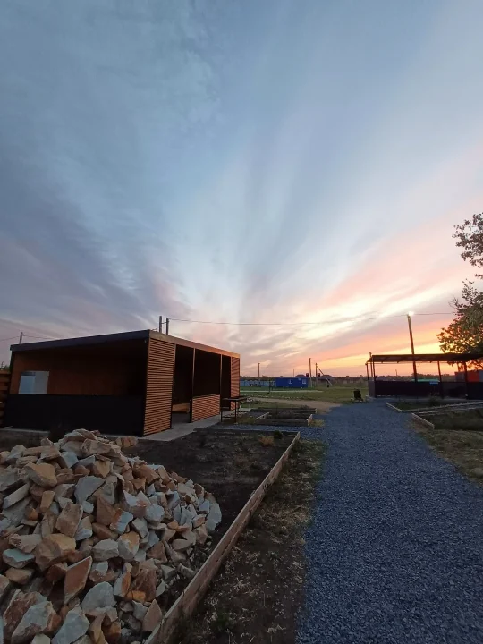
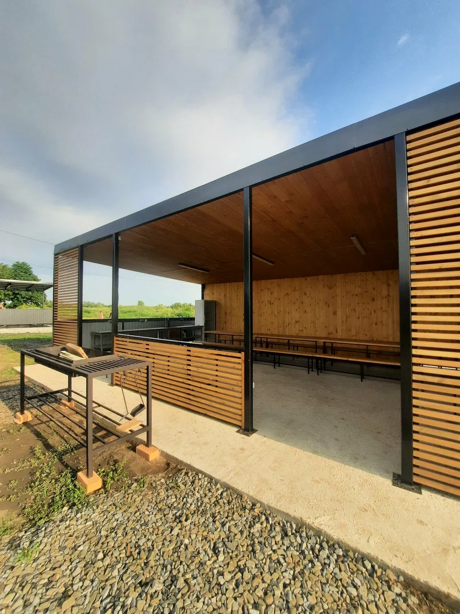

Большая беседка
От 20 человек и болееСамая большая беседка: полностью выполнена из дерева, при этом уютная и с хорошим обзором территории. Отличный вариант для больших праздников.
- Своя линия кухни и холодильник
- Столы и лавки можно расставить по-разному
- Розетки и вечернее освещение
- Собственный мангал рядом
- Парковка всех автомобилей включена
Подробнее о большой беседке
Можно организовать отдельные столы для взрослых и детей, подключить свою колонку, зарядить телефоны и провести большой семейный праздник.